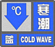

| 最低气温下降 | 最低气温小于等于 | 陆地平均风力 | |
|---|---|---|---|
|  | 8小时内最低气温下降8°C以上 | 4°C | 5级以上 |
| 24小时内最低气温下降10°C以上 | 4°C | 6级以上 | |
| 24小时内最低气温下降12°C以上 | 0°C | 6级以上 | |
| 24小时内最低气温下降16°C以上 | 0°C | 6级以上 |
21日
22日
23日
24日
25日
2016年1月21日-25日
各地天气情况
各地天气情况
部分地区受寒潮影响情况
寒潮的成因通常较为复杂，它与全球气候变化密不可分